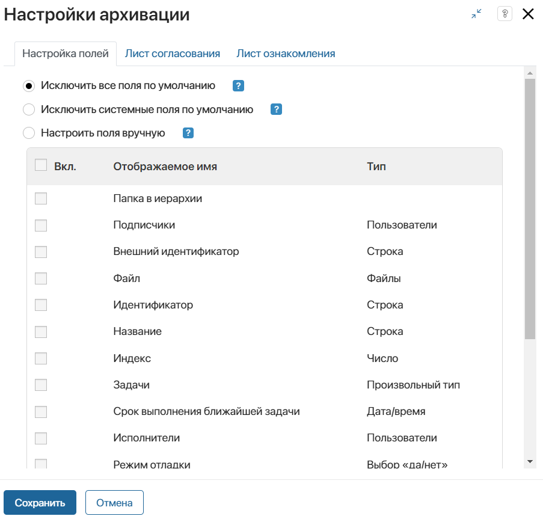

Когда элемент приложения отправляется на ознакомление или согласование, сотрудникам назначаются задачи, а в карточке документа формируется лист ознакомления или согласования. С помощью этого листа можно просмотреть участвующих в процессе пользователей и их вынесенные резолюции.
До окончания процесса согласования или ознакомления сотрудники могут открыть карточку элемента и отредактировать данные в ней, например, указать другое значение для любого свойства документа.
В таком случае может понадобится оповещать пользователей об изменении данных элемента в процессе и отмечать лист согласования или ознакомления неактуальным. Для этого используется опция архивации текущего листа и прерывание запущенного процесса.
Для каждого приложения можно задать собственные правила архивации листов, т. е. выбираются свойства элемента, которые можно или нельзя редактировать в процессе согласования и ознакомления. Кроме того, в настройках можно указать бизнес-процессы, которые будут запускаться после архивации каждого листа.
Например, участники процесса согласовывают определённый документ, а другой пользователь добавил его новую версию. Можно задать настройки, чтобы после этого лист согласования отправлялся в архив. При вынесении резолюции одним из сотрудников, процесс согласования прервётся, а в заархивированном листе будет отображаться статус Отменено. Таким образом все участники будут знать, что лист согласования не актуален, и документ необходимо направить на рассмотрение повторно.
Задать правила архивации листов согласования и ознакомления
- Нажмите значок шестерёнки рядом с названием приложения и в блоке Дополнительные выберите пункт Настройки архивации.
- В открывшемся окне на вкладке Настройка полей отмечена опция Исключить все поля по умолчанию, чтобы в процессе согласования или ознакомления пользователи редактировали любые свойства приложения. Листы согласования при этом не будут архивироваться.

Вы можете выбрать другие опции:
- Исключить системные поля по умолчанию — отметьте опцию, чтобы в процессе согласования или ознакомления пользователи смогли изменять системные поля приложения: Идентификатор, Автор, Дата создания и т. д. Обратите внимание, при выборе этой опции нельзя отключить поля: Название и Файл у приложений типа Документ, а также Дата начала и Дата окончания у приложений типа Событие. Если пользователи отредактируют их, лист согласования отправляется в архив;
- Настроить поля вручную — выберите опцию, а затем включите поля, значения которых нельзя изменять в процессе согласования или ознакомления. В списке представлены все свойства приложения — как системные, так и пользовательские. При ручной настройке оставьте неотмеченными системные поля Редактор и Дата изменения, т. к. их значения меняются при редактировании любых других свойств документа. Если эти поля включены, листы согласования отправятся в архив.
Например, вы хотите отслеживать изменения в договоре во время его согласования. Для этого вы можете установить настройки архивации листа согласования, выбрав опцию Настроить поля вручную и отметив нужные поля:
- если нужно архивировать текущий лист каждый раз, когда пользователи добавляют новую версию файла, выключите все поля, кроме свойства типа Файлы, в котором хранится договор;
- если пользователи не должны изменять договор и его свойства, включите все поля в настройках. При изменении любого поля лист согласования будет отправляться в архив.
- На вкладках Лист согласования и Лист ознакомления вы можете указать бизнес‑процессы, которые будут запускаться при отправке листа согласования и ознакомления в архив. Выбрать можно разные процессы для двух готовых маршрутов документа. Например, при архивации листа согласования в рамках процесса можно изменить статус элемента с Согласовано на Требуется повторное согласование. Чтобы настроить запуск процесса:
- На нужной вкладке включите опцию запуска процесса для листов согласования или листов ознакомления.
- Нажмите Выберите процесс и укажите, какой процесс запускать при отправке листа в архив.
- В настройке Связать с полем укажите, в какую контекстную переменную процесса будет передаваться элемент приложения, по которому запустился экземпляр процесса. Если в контексте есть переменная, связанная с настраиваемым приложением, она подставится автоматически.
- Настройте передачу данных из приложения в процесс. Для этого нажмите ссылку Настроить входные параметры и сопоставьте переменные из контекста процесса с полями приложения.
- Сохраните настройки.
Обратите внимание, при экспорте приложения настройки архивации выгружаются вместе с ним. Если при архивации листов запускается бизнес-процесс, созданный на уровне экспортируемого приложения, все настройки сохранятся. При импорте в другую компанию они будут выполняться корректно. Если выбранный в настройках процесс создан на уровне другого компонента системы, для выполнения архивации рекомендуется экспортировать приложение в составе решения.
Каждый раз, когда вы применили новые настройки архивации к приложению, все текущие листы согласования и ознакомления в элементах отправляются в архив. Затем документы отправляются по процессу повторно с новыми настройками архивации листов.
Листы согласования можно вернуть из архива:
- автоматически — если лист согласования документа отправлен в архив из-за изменения настроек в приложении, он станет действительным, когда установят изначальные параметры архивации. То есть задать нужно те настройки, которые действовали, когда документ отправлялся на согласование;
- вручную — вернуть лист согласования из архива могут пользователи с правами на редактирование элементов в приложении. Например, чтобы не прерывать процесс при изменении настроек архивации, лист отмечается как действующий до выполнения задач согласования. Для этого в карточке документа откройте список архивных листов согласования и напротив нужного файла нажмите значок стрелки. Подробнее об этом читайте в статье «Листы ознакомления и согласования документов».